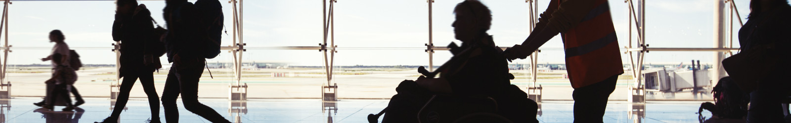

Disability:-
Disability Assistance:-
- To be able to assist you the best, we request you to notify us of your special needs/wheelchair request at least forty eight (48) hours prior to the schedule departure of your flight. While making your booking please let us know how we can best assist you and what seat will best accommodate your needs. If you arrive at the airport without a seat assignment, we will make every effort to provide the requested accommodation.
- Our cabin crew members are trained in providing first aid assistance and the following assistance to you
- An individual safety briefing to any customer who may need the assistance of another person to move expeditiously to an exit in the event of an emergency
- An Individual safety briefing to any customer whose disability prevents them from comprehending the safety information presented during our safety briefing.
- Assistance with stowing and retrieving carry-on and assistive devices.
- Assistance with opening food and drink items.
Boarding:-
- Ishuja offers pre-board courtesy for all our customers needing assistance and are requested to let the gate staff know of the need to pre-board and are requested to be in the gate area when pre-boarding begins. Please note that our boarding gates close twenty-five (25) minutes (domestic) and twenty-five (25) minutes (international) prior to the scheduled departure time, post which boarding is not allowed. Also note that some airports are silent airports and there are no pre-departure announcements made.
The following are relevant for our customers requiring disability assistance:
- Requirement of traveling with a Safety Assistant
- For our customers with Sensory Impairment
- Service Dog
- Mobility Assistance
- Assistive device
- Traveling with broken limbs
- Customers with Psychiatric or Emotional disorders
- Customer with Intellectual disability/Dementia/Alzheimer/Autism and Down syndrome:
- Internal Devices
- Portable oxygen concentrators (POC)
- Customers with certain adverse medical conditions